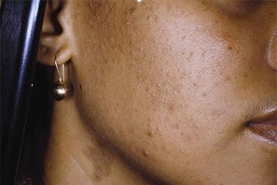

#GlowIn6 Challenge Week One Routines
Ready to get started with the #GlowIn6 Challenge? Below are the ingredient-specific routines (pictured). Full routines with products will be below each image. Please note: these products are shared as EXAMPLES. You do not have to go out and buy them if you don't want to. I'll be on Instagram Live on Sunday to discuss each routine, what the focus of the week is, and why we're using what we're using. In the interim you can ask a question on Twitter by utilizing the hashtag #GlowIn6.
You'll notice that these routines are BASIC. This is because hydration is a key factor in getting your skin to glow and, since it's winter time, we all need some help in that department. Also, as we go through the weeks, we'll be using some products that may contain high percentages of AHAs/BHAs or drying ingredients like adapalene and benzoyl peroxide. We need to start with a good, hydrated foundation.
Acne I (New to This)
Acne I is for beginners with very mild acne and/or people with sensitive skin who are also experiencing acne. Mild acne during this challenge means that you have comedones (blackheads/whiteheads) present and a few scattered pimples (small-to-medium sized raised bumps that can appear red). If you are pregnant, you may not be able to use some of the products mentioned. Please consult with your doctor. Here are some images of what mild acne may look like:
-

Below is a sample INGREDIENT-FOCUSED routine to follow for week one of the #GlowIn6 challenge
And here is a sample routine with products. Again, you do not have to get these specific products. They are just here as examples. Examples are likely to change every single week so I want to STRESS that you absolutely do not have to purchase the products you see here.
Warning: if you decide to purchase the Vichy Aqualia Thermal Gel you will smell like a 68-year-old woman named Eleanor who has been divorced twice and lost her third husband to a "mysterious" death. Eleanor splits her time between the French Riviera and Coral Gables, FL. She hasn't worked since she was 27 and has never owned a business but she's one of the wealthiest women you know.
Acne II (True to This)
Acne II is for people with moderate to severe acne. This is characterized by the presence of comedones, pimples, pustules, large nodules, and cysts. For those with the severe acne, the nodules and cysts may also feel painful. Before starting this challenge, you may have already visited a dermatologist and been prescribed oral or topical medications to help remedy the breakouts. If this is true for you, please consult with your dermatologist before incorporating any products with newer acids that are not apart of your current routine. Similarly, if you are pregnant, consult with your doctor before getting any new skin care products. If neither applies to you, below is an ingredient-specific routine.
And here is a routine with products.
Hyperpigmentation I (New to This)
This is for people who have light-medium hyperpigmentation/newer (less than 6 months old) scars or those with hyperpigmentation and super sensitive skin. If you are pregnant or currently using any prescription medicines for discoloration, you may want to consult with your doctor before using any products with acids. I think following this routine throughout the challenge is a great lead up to getting a chemical peel! View the ingredient-specific and product examples below.
Hyperpigmentation II (True to This)
This is for those with deep hyperpigmentation and/or those experienced with using acids in their skin care routines. The discoloration may have been there for more than 6 months or even years and can be a scar or the result of a hormonal change (melasma). If you are pregnant or currently using any prescription medicines for discoloration, you may want to consult with your doctor before using any products with acids. View the ingredient-specific and product examples below.
Well, this is super embarrassing but I forgot to add the second Hydrating Toner step in this example. Spray the hydrating toner once more after the Bliss Glow & Hydrate Serum.
And with this info you're ready to go! I'll be back in a week to let you know what to add-in for next Sunday.